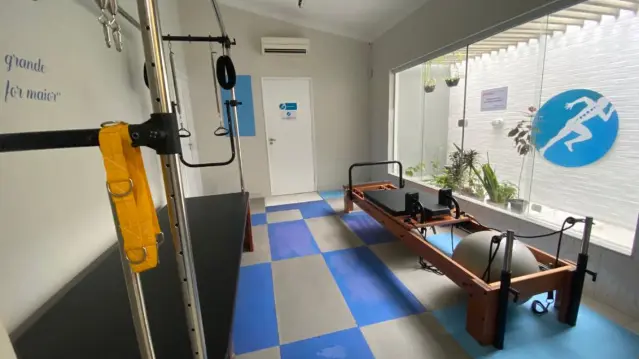
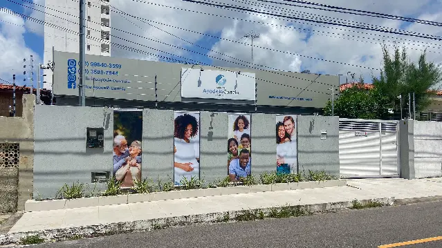
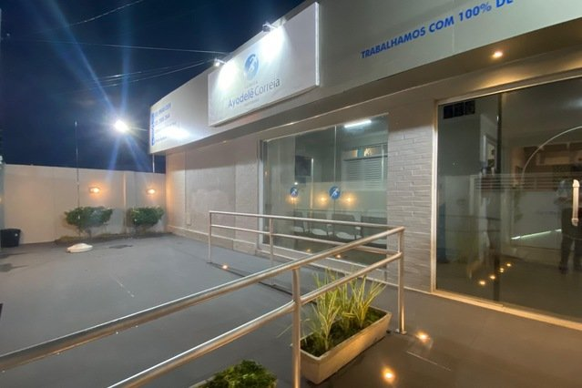

Fisioterapia
Converse com a nossa equipe sobre sua necessidade e saiba como agendar seu atendimento.
Consultar atendimentoPedro Gondim, João Pessoa
Fisioterapia, Pilates e Pilates pré-natal em um espaço preparado para receber você.
Vamos conversar sobre o cuidado que você procura e encontrar o atendimento adequado para o seu momento.

Nossos cuidados
Conheça nossos atendimentos. Para tirar dúvidas sobre indicação, avaliação e disponibilidade, fale com a gente.
Converse com a nossa equipe sobre sua necessidade e saiba como agendar seu atendimento.
Consultar atendimentoConheça nosso espaço e fale com a gente para saber sobre as aulas e os horários disponíveis.
Saber mais sobre PilatesUm atendimento voltado ao período da gestação. Consulte nossa equipe sobre avaliação e participação.
Conversar sobre pré-natal

Nossa clínica
Nosso endereço é na Rua Juíz Ovídio Gouvêia, em João Pessoa. Venha conhecer o espaço em que realizamos nossos atendimentos de Fisioterapia e Pilates.
Antes da sua visita, fale com a gente para consultar os horários e combinar seu atendimento.
Acompanhe nosso InstagramFale com a gente
Tire suas dúvidas e consulte os horários disponíveis diretamente com nossa equipe.
Agendar pelo WhatsApp